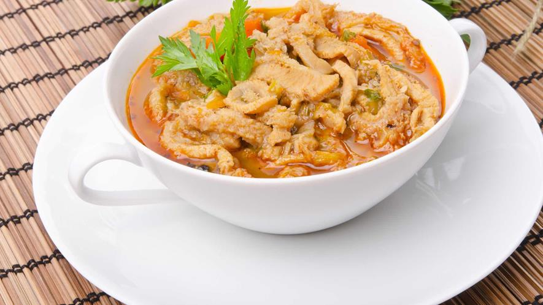
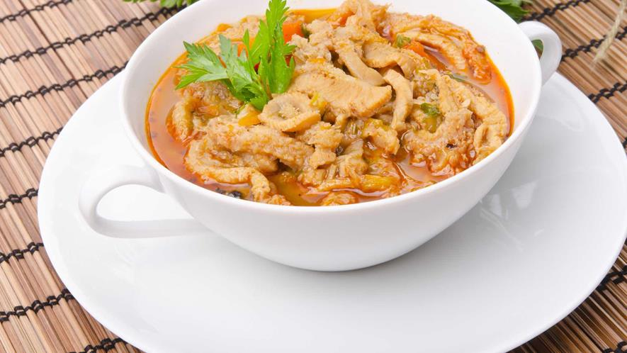

| Home | Local Dishes |
Historical Places | Useful Links | About Me | Contact Me | Registration |
Here is the local dishes for Krakow
Traditionally a winter dish, Bigos is a hearty stew made in large batches. Though there is no standard recipe, ingredients usually include lots of fresh and pickled cabbage, leftover meat parts and sausage, onion, mushrooms, garlic and whatever else is on hand. In fact, metaphorically Bigos translates to ‘big mess,’ ‘confusion’ or ‘trouble’ in Polish. Seasoned with peppercorns, bay leaves, caraway and the kitchen sink, the stew is left to gestate, sometimes underground, for a few days for full flavour infusion. A Polish restaurant or prospective wife can be fairly measured on the strength of their Bigos.

Translating to ‘little pigeons,’ this favourite dish consists of boiled cabbage leaves stuffed with beef, onion and rice before being baked and served in a tomato or mushroom sauce. Polish legend claims King Kazimierz fed his army gołąbki before a battle outside Malbork against the Teutonic Order, and their unlikely subsequent victory has been attributed to the hearty meal ever since.
Pierogi arrived on Polish territories in the 13th century. The were probably imported from the Far East via eastern neighbors such as Kievian Rus (today's Ukraine) perhaps thanks to Hyacinth of Poland (a monk in a Kiev monastery who became patron saint of pierogi). In the past, pierogi were more popular in the eastern borderlands of Old Poland than in the west. The first written pierogi recipes come from Compendium Ferculorum a book published in 1682. It was the first Polish cookbook of the renowned cook Stanisław Czerniecki. What was the stuffing for those ancient pierogi? No potatoes (which were unknown in the 17th century in Poland...) but chopped kidneys, veal fat, greens and nutmeg
A zapiekanka s an open-face sandwich made of half of a baguette or other long roll of bread, topped with sautéed white mushrooms, cheese and sometimes other ingredients, and toasted until the cheese melts. Served hot with ketchup, it is a popular street food in Poland. With its origin dating back to the 1970s, the zapiekanka is associated with the austere times of Poland's Communist regime, but it has enjoyed renewed demand in the 21st century, which has also brought a wider range of varieties.

 

Poland has three signature soups: barszcz, żurek and flaki. A nourishing beetroot soup, barszcz may be served with potatoes and veggies tossed in, with a croquette or miniature pierogi floating in it, or simply as broth in a mug expressly for drinking ('barszcz solo'). A recommended alternative to other beverages with any winter meal, we’d be surprised if you can find a bad cup of barszcz anywhere in Kraków. It doesn’t get any more Polish than żurek – a unique sour rye soup with sausage, potatoes and occasionally egg chucked in, and often served in a bread bowl. If you’re of strong constitution and feeling truly adventurous, spring for flaki – beef tripe soup enriched with veggies, herbs and spices. A hearty standby in most kitchens, we personally save the pleasure for compromising situations involving mother-in-laws, but we still have to give credit to any local restaurant bold enough to keep this on their menu.
Probably the most popular lunch/supper in Poland is the almighty ‘schabowy’ with mashed potatoes and pickled cabbage, and you can walk into almost restaurant in the country and be assured of its presence on the menu (if the kitchen hasn’t run out of it already). Essentially a breaded and fried pork chop (cutlet), ‘kotlet schabowy’ is quite similar to Viennese schnitzel, and a solid bet for a cheap, filling, risk-free meal. If you’re awoken on a Saturday or Sunday morning by the sound of profuse banging - that’s the collective sound of every housewife in Poland tenderising the meat for this meal with a spiky mallet. So best mind your manners.